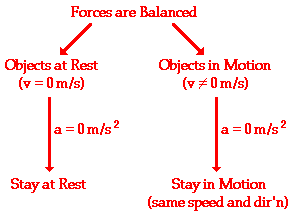

An object at rest stays at rest and an object in motion stays in motion with the same speed and in the same direction unless acted upon by an unbalanced force
There are two clauses or parts to this statement - one that predicts the behavior of stationary objects and the other that predicts the behavior of moving objects. The two parts are summarized in the following diagram.
The behavior of all objects can be described by saying that objects tend to "keep on doing what they're doing" (unless acted upon by an unbalanced force). If at rest, they will continue in this same state of rest. If in motion with an eastward velocity of 5 m/s, they will continue in this same state of motion (5 m/s, East). If in motion with a leftward velocity of 2 m/s, they will continue in this same state of motion (2 m/s, left). The state of motion of an object is maintained as long as the object is not acted upon by an unbalanced force. All objects resist changes in their state of motion - they tend to "keep on doing what they're doing."